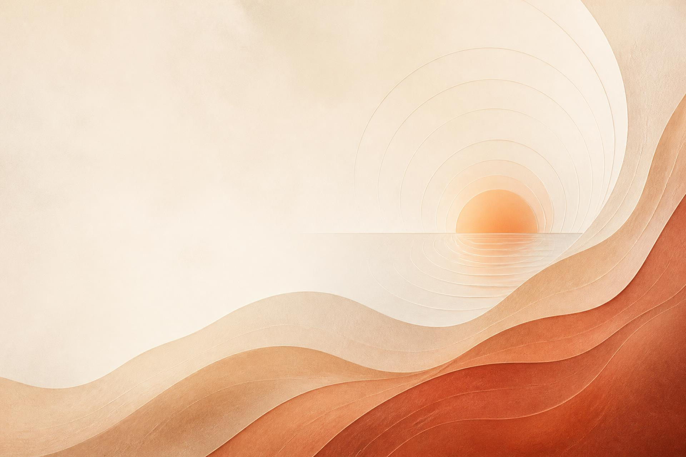
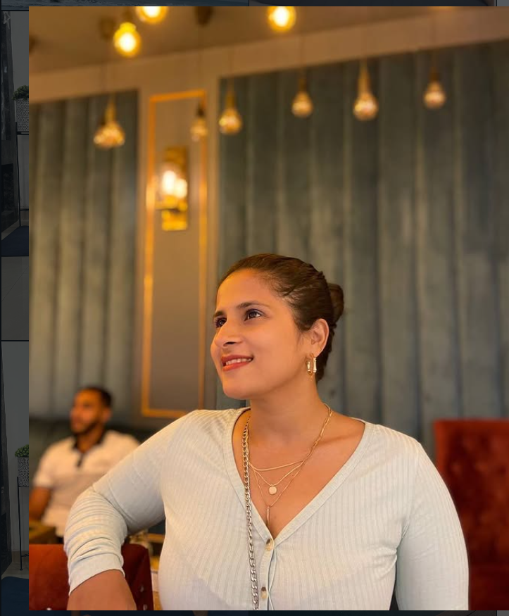

Personal Life
For moments when you are seeking clarity around personal situations, relationships or important life decisions.

Personal Guidance • Reflection • Clarity
A space for reflection, guidance and meaningful conversations — helping you understand where you are, and find clarity for where you want to go.

About Aatman & Nupur
Aatman was created by Nupur as a space where people could speak openly, be heard without judgement, and think through their situation with someone alongside them.
Her work brings together tarot as a reflective tool, counselling conversations and intuitive guidance — always shaped around the person in front of her, never around a fixed script.
“Clarity rarely arrives from being told what to do. It arrives when you finally hear your own thinking clearly.”
Who is this for?
For moments when you are seeking clarity around personal situations, relationships or important life decisions.
For people navigating career decisions, workplace challenges, transitions or uncertainty.
For periods of change when you need space to pause, reflect and understand your next step.
For those who want to understand themselves better and develop greater self-awareness.
For people who need a safe space for meaningful conversations and reflection.
For moments when multiple possibilities exist and you want to explore your thoughts and perspectives more clearly.
How Aatman works
Tarot used as a reflective tool — a way to explore a situation, its perspectives and the possibilities in front of you.
One-to-one conversations that offer a safe space to express thoughts, explore situations and gain perspective.
A reflective approach that helps you connect with your own thoughts, feelings and inner perspective.
Tailored conversations shaped entirely around your situation, your questions and what you need right now.
Pause. Reflect. Understand. Gain clarity. Move forward.
Aatman is not about predicting your future. It is about understanding your present clearly enough to choose your next step with confidence.
Offerings
A reflective reading to explore a question, a situation or a choice you are sitting with.
A one-to-one conversation in a private, unhurried and non-judgemental space.
A tailored session combining conversation and intuitive guidance around where you are.
A series of sessions for those who prefer continuity over a single conversation.
Community
Start where you feel comfortable. Join a free introductory session, or simply stay connected through the Aatman community until the time feels right.
An introductory conversation to understand how Aatman works and whether it feels right for you.
Join a Free SessionReflections, prompts and gentle reminders — a quiet place to stay connected.
Join the WhatsApp CommunityThere is no pressure here. Write in, ask anything, and begin only when you feel ready.